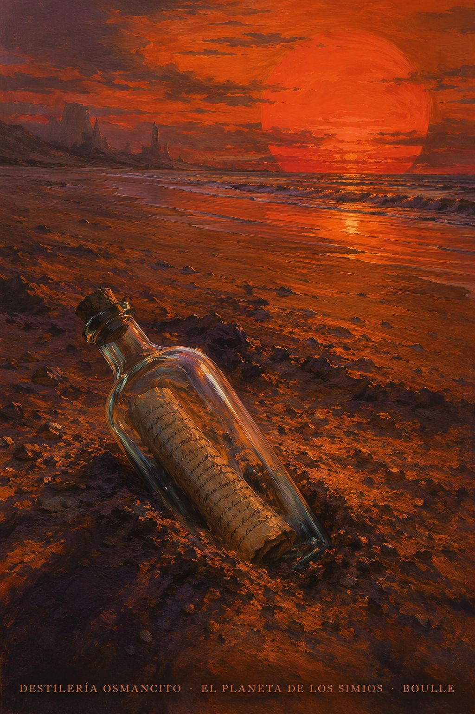
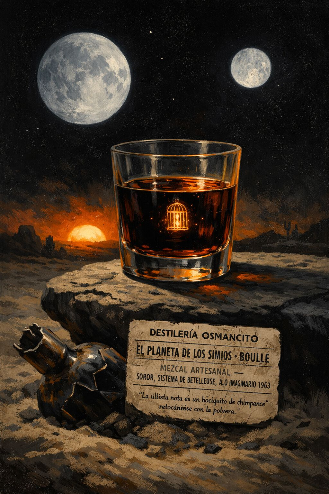
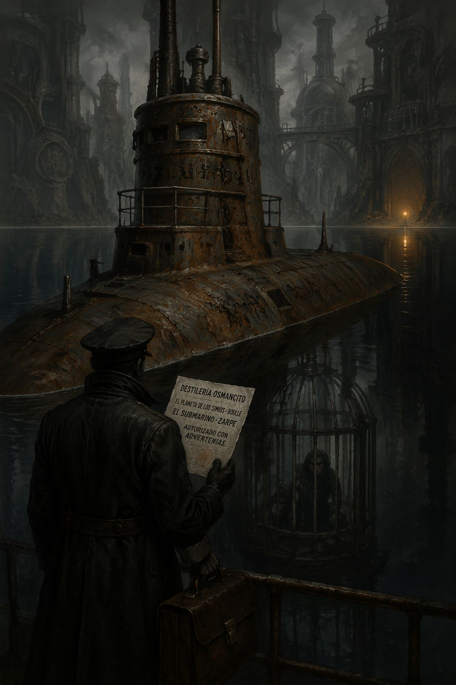
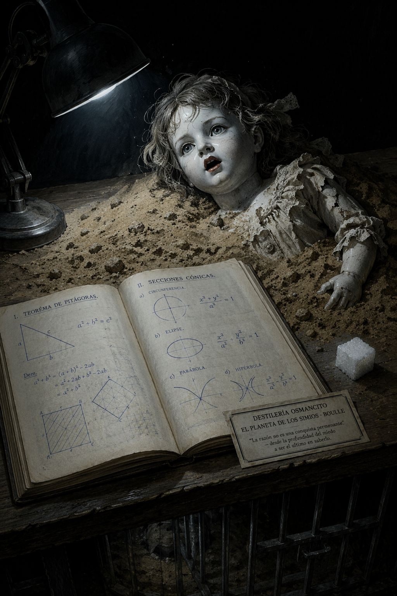
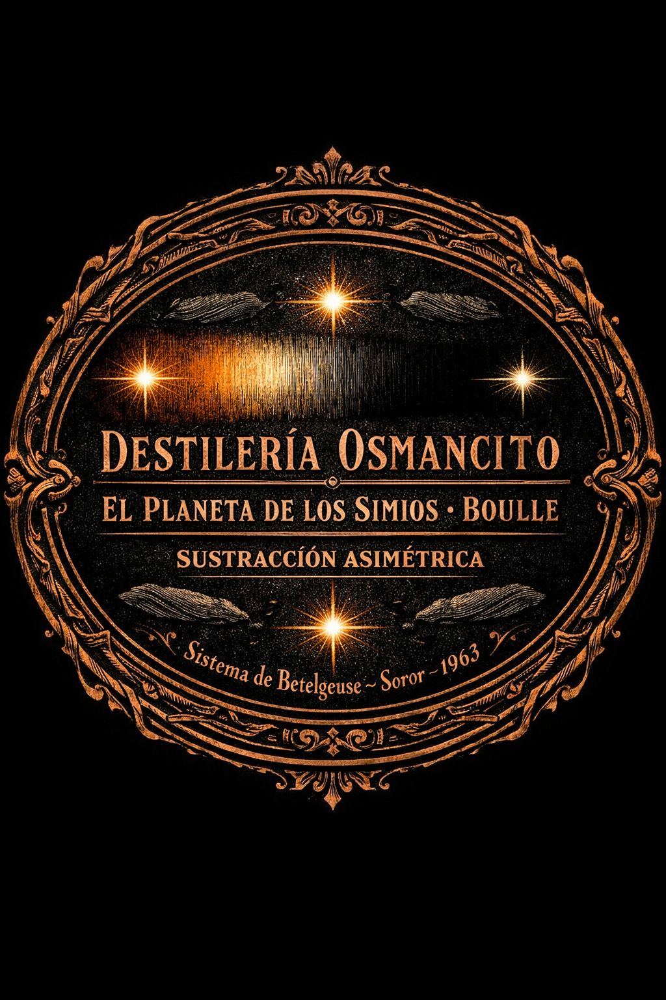

Registro de Entrada
Registrando datos de entrada...
Recepción completa. El Alambique puede operar.
Sinopsis y Figuras Clave
Un periodista terrestre, Ulises Mérou, viaja en el año 2500 a Betelgeuse junto al sabio Antelle y el físico Levain. En el planeta Soror encuentran que los simios —gorilas, orangutanes y chimpancés— son la especie dominante y racional, mientras los hombres son animales salvajes que viven en manadas. Capturado, enjaulado y sometido a experimentos, Ulises logra comunicarse con la chimpancé científica Zira y su prometido Cornelius, demuestra su inteligencia ante un congreso científico y obtiene cierta libertad. Descubre que hubo una civilización humana anterior que degeneró. Tiene un hijo con la mujer salvaje Nova. Ante la amenaza de los orangutanes conservadores, sus aliados simianos lo ayudan a escapar con Nova y el bebé en la nave cósmica hacia la Tierra. El regreso a Orly concluye con la aparición de un gorila uniformado: la Tierra también ha sido conquistada. El manuscrito que hemos leído es una botella lanzada al espacio, encontrada y leída por Jinn y Phyllis —una pareja de chimpancés— que concluyen que todo es una "bonita mixtificación" porque la idea de que los hombres sean racionales les parece imposible.
Ulises Mérou — narrador, periodista terrestre, protagonista y voz de la razón humana. Zira — chimpancé científica, aliada principal, figura de compasión y lucidez. Cornelius — chimpancé académico, prometido de Zira, científico heterodoxo que descifra el enigma de los orígenes. Zaïus — orangután conservador, director científico, encarnación de la autoridad obtusa. Nova — mujer salvaje del planeta Soror, compañera de Ulises, madre de su hijo. Jinn y Phyllis — pareja de chimpancés lectores, cuya naturaleza simiesca solo se revela en la última línea.
Materias Primas Dominantes
¿Qué separa a una especie que piensa de una especie que imita, si la imitación puede producir civilización? El corpus trabaja esta tensión de forma sostenida: los simios de Soror son civilizados pero surgieron de la imitación de los humanos; los humanos de la Tierra fueron superados no por invasión sino por delegación voluntaria de su propio rol.
¿Puede el observador racional reconocerse como el observado, si el marco de observación lo define como animal? Ulises solo puede demostrar su inteligencia desde dentro de una jaula, ante jueces que tienen interés estructural en no creerle. El corpus pregunta si la razón tiene algún valor cuando el poder decide qué cuenta como razón.
¿Es la decadencia humana un accidente o una ley? La degeneración de los hombres de Soror no fue violenta: fue una cesión progresiva, una pereza del espíritu. El corpus insinúa que la humanidad terrestre —el lector— podría estar recorriendo el mismo camino.

Módulo Alambique — Destilación
Destilando barrica por barrica...
Componiendo el destilado maestro...
Eligiendo la bebida para la nota de cata...
Destilado Maestro
Imagina un manuscrito dentro de una botella de cristal que flota en el espacio entre estrellas. El manuscrito cuenta la historia de un hombre que viajó lejos, muy lejos, y descubrió que en otro mundo los monos son personas y los hombres son animales. El hombre lo escribe todo con la letra apretada de quien sabe que tal vez nadie lo lea nunca, o que quien lo lea no tenga motivos para creerle.
Lo que encontró en ese otro mundo no fue lo monstruoso: fue lo familiar visto del revés. Las ciudades parecían ciudades. Los automóviles parecían automóviles. Los científicos discutían como científicos, los burócratas frenaban como burócratas, y los conservadores defendían sus teorías con la misma terquedad que conocemos desde siempre. Solo había un detalle diferente: las criaturas que hacían todo esto eran simios, y las que yacían en las jaulas, con mirada vacía y manos tendidas hacia las recompensas, eran hombres.
El hombre que escribía el manuscrito comprendió enseguida lo que significaba esa inversión, y esa comprensión es exactamente lo que sus captores le negaban: la capacidad de comprender. Pasó meses demostrando que pensaba. Resolvió cajas con nueve cerraduras. Dibujó el teorema de Pitágoras. Aprendió la lengua simiesca. Se ganó aliados leales. Pronunció un discurso ante miles de simios atónitos. Y aun así, el orangután oficial siguió firmando informes que lo clasificaban como un animal con instintos particularmente desarrollados, porque cambiar de opinión habría sido más costoso que ignorar las pruebas.
Hay una escena que lo contiene todo. El hombre, ya libre, ya reconocido, entra al zoo y encuentra a su mentor —el sabio más brillante de la expedición, el hombre cuya inteligencia lo convocó a ese viaje— mendigando trozos de pastel a través de los barrotes con ojos vacíos. No hubo tortura. No hubo lobotomía. El sabio simplemente cedió. Se acostumbró. Encontró en la jaula algo suficiente.
Eso es lo que el libro quiere decir, aunque nunca lo dice directamente: la razón no es una conquista permanente. Se pierde. Se entrega. Se renuncia a ella de a poco, ante las comodidades de la sumisión, ante la fatiga de insistir en ser lo que uno es cuando nadie alrededor lo confirma.
El manuscrito termina. La botella llega a manos de Jinn y Phyllis, que lo leen con placer y concluyen que es una ficción encantadora, porque la idea de que los hombres pudieran ser racionales les parece simplemente imposible. Phyllis sacude sus orejas peludas y retoca su hocico con la polvera. El universo sigue girando.
El libro que acabas de leer fue escrito por hombres para hombres. La botella la encontraron los simios.
Barricas
Cartografía
Las barricas más concentradas son las de los capítulos V–IX de la primera parte (el descubrimiento de la civilización simiesca, los tests de Pavlov, el congreso) y los capítulos VI–VIII de la tercera parte (la mujer que recuerda, la fuga, el regreso a la Tierra). Los capítulos de transición de la segunda parte —la vida cotidiana en el Instituto libres— son más livianos en fracciones nobles pero esenciales para construir la verosimilitud del mundo.
La mirada vacía reaparece en Nova (primera aparición), en los hombres del zoo, en el profesor Antelle al final, y es simétrica a la mirada que los simios dirigen a Ulises en los primeros capítulos. La comida como recompensa o degradación (el terrón de azúcar de Zira, los pasteles del zoo, la papilla de los prisioneros) estructura la relación de poder en cada contexto. La sonrisa como marcador de humanidad: Nova no sabe sonreír, los hombres de Soror no sonríen, la risa humana aterroriza a la tribu. El gesto del índice en los labios para pedir silencio aparece dos veces: Zira se lo pide a Ulises ante Zaïus; Ulises se lo pide a Nova.
La inteligencia no puede demostrarse desde una jaula ante jueces que tienen interés en no reconocerla. La degeneración humana en Soror no fue violenta sino voluntaria, lo cual deja abierta la pregunta de si la humanidad de la Tierra —y el lector— está recorriendo el mismo camino. El corpus pretende resolver la tensión con la huida de Ulises pero la destruye con el gorila en Orly.
Ulises domina la narración con voz de testigo lúcido. Zira tiene la segunda voz más fuerte: es quien más actúa, quien más arriesga. Cornelius tiene presencia intelectual mayor que dramática. Zaïus es la voz del obstáculo sin que el corpus lo haga villano: su obtusidad es institucional, no personal. Nova no tiene voz pero su presencia física estructura cada escena en que aparece. Las voces de la mujer en el experimento encefálico son las únicas voces del pasado que el corpus permite escuchar.
El argumento tiene una estructura de inversión doble: se construye la esperanza del reconocimiento (congreso), se consolida (libertad, alianzas, hijo), y luego se destruye en dos golpes consecutivos —el Gran Consejo amenaza, la fuga resulta inútil— y el gorila en Orly anula todo lo anterior. La tercera inversión, la del epílogo de Jinn y Phyllis, anula incluso la posibilidad de que el manuscrito sirva de advertencia.
Nota de Cata

Módulo Control de Calidad — Inspección
Inspeccionando casco y quilla...
Sondeando aguas profundas...
Examinando al capitán y su sombra...
Afinando la partitura...
Emitiendo veredicto de zarpe...
Clasificación de Nave
El corpus navega bajo bandera de novela de aventuras de ciencia ficción y lleva en el casco una carga completamente distinta: sátira política, filosofía de la decadencia, tratado sobre los límites de la razón institucionalizada. La agenda oculta es detectable a media travesía —cualquier lector atento nota que Boulle está escribiendo sobre Francia de los sesenta y sobre los mecanismos del poder tanto como sobre simios—, pero la construcción es suficientemente sólida para que el engaño funcione hasta el final. El "Regular" se debe a que la inversión final, aunque perfecta, es también predecible en retrospectiva, y a que el corpus no siempre confía en su propio poder.
Los Seis Estratos de Inspección
La tesis central es doble y asimétrica: primero, que el poder institucional puede clasificar la razón como bestialidad y sobrevivir a la prueba; segundo, que la decadencia intelectual es una elección, no un destino. El casco aguanta. La primera tesis es perfectamente demostrada por el mecanismo de Zaïus. La segunda —más ambiciosa— se demuestra por las voces de la mujer en el experimento encefálico y por el profesor Antelle, pero no se argumenta filosóficamente: se muestra y se deja sin análisis. El casco tiene una pequeña grieta: el corpus asume que el lector sacará la conclusión sobre la humanidad de la Tierra sin que se la formulen, pero en algunos momentos Ulises la formula de todas formas. La confianza falla justo donde no debería.
El corpus navega sobre corrientes que Boulle no nombra pero que lo empujan sin que él lo controle del todo. La descolonización francesa —en plena crisis de Argelia en 1963— impulsa la pregunta sobre quién tiene derecho a clasificar a quién como civilizado o salvaje. La guerra fría empuja la pregunta sobre si la razón puede sobrevivir a los aparatos institucionales del poder. Y bajo todo: el complejo de culpa de la inteligencia europea ante el nazismo, que instaló la pregunta sobre si la razón ilustrada tiene defensas reales contra quien decide que no existe. El corpus no habla de nada de esto. Y habla de todo esto.
La estructura de tres partes con marco narrativo es un mecanismo de relojería: la Parte I instala la inversión de especies; la Parte II desarrolla la sociología simiesca y el reconocimiento de Ulises; la Parte III destruye retroactivamente la esperanza de la Parte II. El marco de Jinn y Phyllis es la cubierta que cierra el mecanismo. La simetría de la construcción es su mayor virtud y su mayor debilidad: es tan perfecta que el final se puede anticipar.
La ontología del corpus es turbadora: implica que la razón no es una propiedad estable de la especie sino un hábito que se pierde. La ética está eludida con elegancia: Boulle no condena a los simios por experimentar con hombres —los pone exactamente en la posición en que los hombres ponen a los simios en la Tierra—, lo cual hace imposible la indignación simple. La verdad que el texto no puede nombrar sin hundirse es que la especie dominante en cualquier cosmos es dominante por razones que no tienen que ver con la razón: tiene que ver con quien llegó primero, con quien cedió antes.
Pierre Boulle proyecta en Ulises el arquetipo del testigo clarividente que nadie escucha: el periodista, no el científico, es quien mantiene la razón intacta. Antelle —el sabio— cede. Ulises —el narrador— resiste. La sombra del capitán es el miedo a que la escritura sea inútil: la botella llegó, el manuscrito fue leído, y sirvió de nada. Boulle escribe una advertencia con plena consciencia de que las advertencias no funcionan. Su obsesión no declarada es la inutilidad de la lucidez.
Puerto de origen: Francia, 1963. Boulle venía de escribir El puente sobre el río Kwai (también sobre cautiverio, humillación y resistencia). La carga declarada es ciencia ficción de entretenimiento. La carga real es filosofía de la decadencia civilizatoria con sátira institucional embebida. El corpus circula en el mundo como aventura de simios; sobrevive como otra cosa.
Sinopsis del Viaje
El corpus zarpa como novela de aventuras y llega a puerto como trampa filosófica. La ruta es impecable en su primera mitad: el planeta de los simios es construido con suficiente detalle sociológico para resultar verosímil, la voz de Ulises es lo bastante clara para sostenerse sin artificios, y la mecánica de la inversión se instala con una sencillez que hace más perturbador el efecto. La segunda mitad, sin ser débil, confía menos en el lector: la teoría del origen simiesco por imitación se explica demasiado, y las escenas de la sección encefálica funcionan como argumento moral más que como literatura. El corpus sabe cuál es su mejor escena —el gorila en Orly— y la guarda para el final. El epílogo de Jinn y Phyllis es perfecto. Es tan breve y tan devastador que hace sentir que todo lo anterior era apenas la preparación de esas tres líneas. El problema es que lo era, y se nota.
Veredicto de Zarpe
Nota Naval
Una botella zarpa. Tarda décadas en llegar. La nota que lleva adentro dice que los hombres piensan, que los hombres construyeron ciudades, que los hombres tuvieron nombres para sus hijos, que los hombres un día tuvieron miedo y cedieron. La botella llega intacta. El cierre de lacre resiste el vacío del espacio. Las letras siguen siendo legibles. Alguien las lee. El lector cierra el texto, sacude sus orejas peludas y retoca su hocico con la polvera. El capitán de este barco sabía exactamente a qué puerto llegaba. Escribió el manuscrito de todas formas.
La Partitura
Este corpus respira lento pero no descansa: es el tempo de quien dicta con plena consciencia de que su voz se apagará antes de que el dictado llegue a manos de alguien que lo entienda. Hay una sola voz, sin contrapunto; la instrumentación es de cámara con una sola cuerda que va perdiendo tensión conforme avanza, no por debilidad sino por diseño. El silencio estructural no está en los blancos entre capítulos sino en las respuestas que el corpus nunca da: cómo cayó Soror, cuándo cayó la Tierra, qué diferencia al lector del profesor Antelle. Esos silencios son los compases más largos. El movimiento no resuelve: se interrumpe en el momento exacto en que alguien cierra una polvera.
Título — Cuarteto de cuerdas n.º 8 en do menor, Op. 110
Autor / Intérprete — Dmitri Shostakovich / Kronos Quartet
Por qué — Porque es un documento escrito para que alguien lo encuentre después del fin, con plena consciencia de que encontrarlo no cambiará nada.

Módulo Laboratorio — Análisis de Sedimento
Leyendo con los cuatro lentes...
El compuesto base: identificado.
Ausencias
El corpus rodea sin nombrar la culpa de los hombres. Las voces del experimento encefálico describen la rendición de la humanidad de Soror con detalle minucioso —la pereza, la cesión del espacio doméstico, la huida al campo— pero nunca hay en el corpus una escena desde el interior de esa rendición. Nunca vemos a un hombre de Soror en el momento de elegir no resistir. Solo vemos el resultado. La ausencia de ese momento es deliberada: si lo mostrara, el corpus tendría que responder si la rendición fue cobardía o sabiduría adaptativa. No responde.
También está ausente la voz de Zira sobre sus propias contradicciones. El corpus nos da sus acciones —generosas, valientes, costosas— pero no su vida interior. No sabemos si duda. No sabemos si siente culpa por los hombres que ella misma utiliza en sus experimentos mientras protege a uno en particular. La pregunta de si el privilegio que Ulises recibe de Zira es ético está completamente ausente del corpus.
La tercera gran ausencia es la historia de los hombres de la Tierra desde el año 2500 hasta que el gorila aparece en Orly. El corpus omite todo: no hay un solo dato sobre cómo ocurrió. La Tierra es mostrada antes y después; el durante es un vacío absoluto. Esa laguna no es solo narrativa: es el argumento más poderoso del libro, porque implica que la caída puede ocurrir sin que nadie la note.
Síntomas
El primer síntoma es la inconsistencia del tono en los capítulos de la sección encefálica. El corpus, que hasta entonces había mantenido la voz de Ulises como distante y analítica incluso ante lo perturbador, de repente se vuelve decididamente indignado. Ulises grita "¡Basta!" y el corpus lo acompaña en el gesto. Esa identificación emocional es comprensible —los experimentos con hombres son el espejo de los experimentos con simios— pero la simetría habría resultado más poderosa con la frialdad analítica que el corpus usó para describir la batida del capítulo V de la primera parte.
El segundo síntoma es la teoría del origen simiesco por imitación, que Ulises desarrolla en el avión de regreso con un detalle que el corpus no necesitaba. La teoría es correcta en términos narrativos pero la explicación extendida, con ejemplos de la Bolsa y del proceso judicial, muestra que Boulle no confió en que el lector la construyera solo. La trampa filosófica funciona mejor cuando el lector llega a ella sin que le abran la puerta.
El tercer síntoma es la escena de la danza del amor, que tiene humor pero suena a concesión al lector de entretenimiento. Ulises bailando alrededor de Nova para satisfacer la ciencia simia es cómica y perturbadora, pero el corpus la resuelve con más gracia de lo que merece: la vergüenza de Ulises se articula demasiado nítidamente, demasiado rápido.
Cifras
La palabra "cuatro" aparece con frecuencia anómala: las cuatro manos hábiles de los simios (argumento evolutivo de Zira), las cuatro patas con que los prisioneros humanos del zoo hacen cabriolas, las cuatro manos con que los simios aplauden en el congreso. Cuatro es el número que separa las especies: los hombres tienen dos manos, los simios tienen cuatro. La geometría de la diferencia está codificada en ese número.
El número nueve aparece dos veces en contextos de competencia intelectual: la caja de nueve cerraduras que Ulises abre en segundos, y los nueve mecanismos del mismo test en el Instituto. Nueve es el límite que los hombres de Soror no pueden superar y Ulises atraviesa sin esfuerzo. También hay nueve capítulos en la tercera parte, la del retorno y la caída.
"Papá" es la primera palabra de la muñeca enterrada hace diez mil años. Es también una de las primeras palabras que dice el hijo de Ulises y Nova. Y es la palabra que los obreros gorilas escuchan sin comprender lo que significa encontrarla en esa ciudad. Tres veces la misma palabra, tres registros distintos de lo que ha sido perdido.
Los Cuatro Lentes de Lectura
Un hombre viaja a un planeta donde los simios son la especie racional, demuestra su inteligencia ante una sociedad simiesca, consigue aliados y huye con su familia, pero al regresar a la Tierra descubre que también allí los simios han tomado el poder. El manuscrito que cuenta todo esto es leído por dos chimpancés que lo descartan como ficción imposible.
El corpus muestra que el reconocimiento de la razón en otro ser depende enteramente de quién tiene el poder de clasificar. Zaïus no es un villano: es una institución. Su negativa a reconocer la inteligencia de Ulises no es maldad sino coherencia con un sistema de conocimiento que ya tiene respuesta para todos los fenómenos. Lo que el corpus muestra —sin decirlo— es que ese mecanismo existe también en la Tierra, que ya funciona así, que Ulises no lo ve porque él está del lado del clasificador.
El corpus exige que el lector se haga una pregunta incómoda: si los hombres de Soror degeneraron por pereza y cesión voluntaria, ¿qué diferencia al lector de ellos? La respuesta honesta es: el tiempo. Estamos antes, no después. La degradación que las voces del experimento describen —"ya no más libros", "incluso el cine infantil ha llegado a ser una fatiga intelectual demasiado grande"— no suena a futuro lejano. El corpus exige que el lector no sea Phyllis al final, pero no da instrucciones sobre cómo evitarlo.
El corpus guarda una ternura particular hacia la lucidez inútil. Ulises escribe para advertir sabiendo que su advertencia llegará a manos de quienes ya no pueden ser advertidos. Zira ayuda a Ulises sabiendo que hacerlo es traicionar a su especie. Cornelius publica su teoría sabiendo que los orangutanes la bloquearán. El libro que el lector tiene en las manos es, en ese registro profundo, un monumento a todos los que lo intentaron de todas formas. Y un memorial por todos los que no pudieron.

Módulo Etiquetado — Topología y Firma
Mapeando el núcleo de curvatura...
Estimando la red conceptual...
Redactando la sentencia final...
Etiqueta aplicada. Lote liberado.
Fallas de Cierre
El corpus muestra el antes (civilización humana), el después (hombres como animales), y algunos fragmentos del durante a través de las voces del experimento encefálico. Pero nunca cierra la mecánica precisa: ¿cuánto tiempo tomó?, ¿hubo un punto de no retorno?, ¿alguien intentó detenerlo? La falta de cierre en esta pregunta es la que hace al corpus inagotable, porque empuja al lector a proyectar respuestas que invariablemente hablan de su propio presente.
El corpus da razones (amor a la ciencia, lealtad afectiva, imposibilidad de ser cómplice de una muerte) pero ninguna las clausura completamente. El lector puede leer amor, puede leer culpa, puede leer una concepción de la ética que supera la lealtad de especie. Ninguna lectura es incorrecta. El corpus no elige.
El gorila en Orly es la respuesta narrativa pero no la explicación. El corpus nunca dice si fue violento, si fue lento, si ocurrió como en Soror (cesión gradual) o de otra manera. La omisión es total y deliberada.
Nova aprende a hablar durante el viaje. El hijo de Ulises habla a los tres meses. El corpus insinúa que sí es posible, pero no en las condiciones de Soror, y no en la Tierra, que ya es tarde. La apertura de esta falla es la única esperanza que el corpus deja encendida. Es muy pequeña.
El corpus la instala en la escena del corredor y la corta. "¡Verdaderamente, eres horroroso!" es el cierre que no cierra nada.
El corpus implica que no. Jinn lo descarta y Phyllis lo acepta. La advertencia fue inútil.
El corpus la confirma con la muñeca, los esqueletos, las voces del experimento. Cornelius tenía razón.
El corpus formula esta posibilidad a través del mesianismo de Ulises en la Parte III pero la destruye inmediatamente con la amenaza del Gran Consejo. La pregunta existe para ser negada, no para ser respondida.
Núcleo de Curvatura
Núcleo principal — La clasificación de lo racional como irracional por quien tiene el poder de clasificar.
Tipo de curvatura — Sobre concepto filosófico. El nodo no es un nombre propio ni un pronombre personal: es un mecanismo —la epistemología del poder— que transforma el significado de cada escena del corpus. El terrón de azúcar de Zira, la tesis de Zaïus, el test de Pavlov, el discurso del congreso, el gorila en Orly: todo orbita alrededor de la misma pregunta sobre quién decide qué cuenta como mente.
Sistema secundario — La degradación voluntaria como alternativa a la resistencia. Orbita el núcleo principal de forma asimétrica: lo complementa pero no lo contradice. La pregunta del núcleo es quién clasifica; la pregunta secundaria es por qué los clasificados aceptan la clasificación.
Red Conceptual
Forma estimada — Small-world con alta centralización. Hay un nodo central de alta integración —el mecanismo de clasificación del poder— y múltiples nodos satélite (la degradación voluntaria, la imitación como origen civilizatorio, la inutilidad de la advertencia, la razón como hábito frágil) que se conectan entre sí a través del nodo central.
Nodo de mayor integración — El poder de clasificar qué es razón y qué es instinto.
Coherencia — El núcleo de curvatura y el nodo de mayor integración coinciden perfectamente. La red es coherente y la convergencia refuerza el impacto del corpus: todas las escenas regresan a la misma pregunta.
Estrategia de Grandeza
La Sentencia Final
